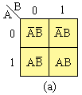
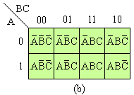
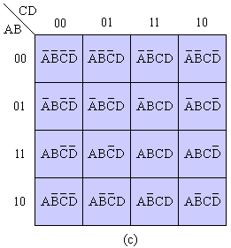
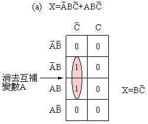
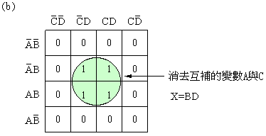
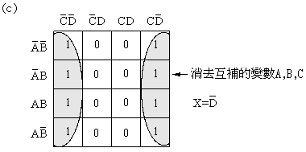

# 利用卡諾圖化簡布林代數的條件判斷式
卡諾圖 ，是真值表的一種擴充，由貝爾實驗室的工程師 莫里斯．卡諾 發明的。 卡諾圖的圖形化表示方式，可以有效的將原始的布林判斷進行化簡。 但是缺點也很明顯：當變數增加，其真值表行列數也會依照 2^n 急遽增加，導致圖形更加複雜化
然而儘管如此，卡諾圖依舊不失為一個整理邏輯的好工具。
接下來將講解卡諾圖的使用方法。
# 卡諾圖使用方法
- 先將變數以真值表的方式話於表格上。
- 如果布林函數有幾個變數，卡諾圖就必須有
2^n個方格。
以下為 (a) 2 變數卡諾圖， (b) 3 變數卡諾圖， (c) 4 變數卡諾圖



- 以
2^n(1, 2, 4, 8, …) 為數量，圈出相鄰的變數，相鄰的變數若為互補則可以消去。



- 每個圈都要盡量
大，並且圈的組數越少越好 - 要將所有的
1都圈到，如果還留下獨立的 1，則個別圈起。 - 每個圈選的結果都是
And，並且使用OR將所有圈選的項目串起，即為化簡後的布林代數式。
# 參考文獻
- 4.2 布林代數卡諾圖簡化
- 數位電路與邏輯設計 教學 chapter 3 布林代數化簡 卡諾圖